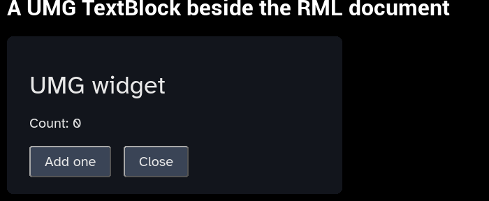
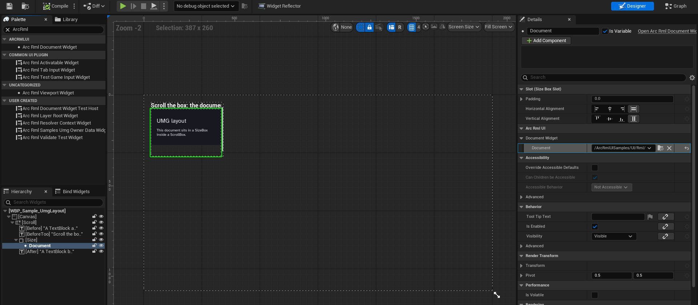
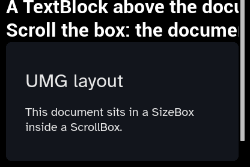
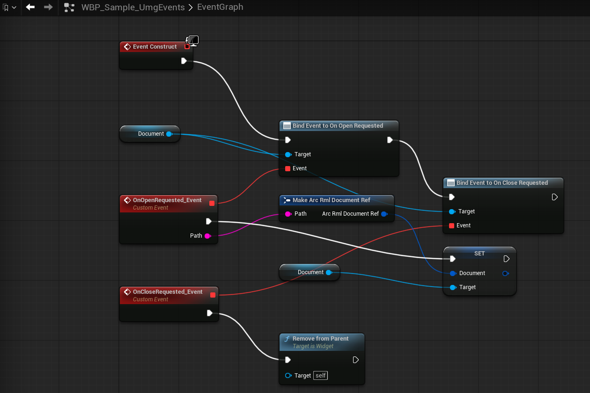
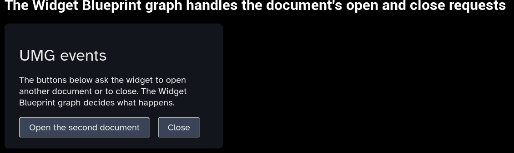
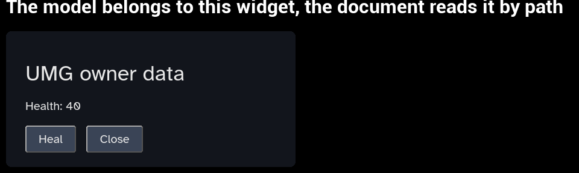

A document in a UMG widget¶
A Widget Blueprint can show a document with the document widget (UArcRmlDocumentWidget, palette category
ArcRmlUI). The widget draws the document in its slot, next to your own UMG widgets, with no layer and no call to
OpenDocument. The UmgWidget sample is a Widget Blueprint with a text block and this widget. Run it by choosing UmgWidget
in the samples list in the map L_ArcRmlSamples (Samples).

Add it to a Widget Blueprint¶
- Open the Widget Blueprint and switch to the Designer.
- In the Palette, open the category ArcRmlUI and drag Arc Rml Document Widget into the Hierarchy or onto the canvas, under the widget that should hold it.
- Select it and set Document in the Details panel to an
.rmldocument. - Size its slot. The document fills the widget's slot, so size the slot, not the document. A slot sized to its content (an Auto slot, a Canvas Panel Size To Content) gives the widget no size and the document does not show; use Fill or an explicit size.
- Compile the Widget Blueprint.
The UmgLayout sample puts the widget in a Size Box (Height Override 260) inside a Scroll Box, between text blocks. Its Designer, with the widget selected:

The document scrolls and clips with its neighbours:

Set the document from code with SetDocument and reload it with ReloadDocument. In the Blueprint category
ArcRmlUI|Document Widget:
| Member | What it does |
|---|---|
Document |
The document to show. SetDocument loads another one; an empty path shows nothing. |
SetViewModel |
Gives a manual model an object (below). |
ReloadDocument |
Loads the same document again. |
OnOpenRequested |
Fires with the path of a data-action="open:<path>" in the document. |
OnCloseRequested |
Fires for a data-action="close" in the document. |
Show the widget¶
A Widget Blueprint reaches the screen like any other: create it and add it to the player's screen. The samples do this in C++ with the two calls below; the Blueprint nodes Create Widget and Add to Player Screen are the same calls.
UUserWidget* Widget = CreateWidget<UUserWidget>(Player, WidgetClass);
if (!Widget)
{
return FArcRmlDocumentRef();
}
Widget->AddToPlayerScreen(ArcRmlSamplesUmgEventsPrivate::ZOrder);
ZOrder is 1500 in the samples, which puts the widget above the layer documents (below).
React to open and close¶
The widget opens and closes nothing itself. It fires OnOpenRequested and OnCloseRequested, and the Widget Blueprint
decides what happens. The UmgEvents sample's document has two buttons:
<button id="ue-next" class="ue-button" data-action="open:/ArcRmlUISamples/UI/Rml/UmgEvents/Second.rml">Open the second document</button>
<button class="ue-button" data-action="close">Close</button>
Its event graph binds both requests in Event Construct with a Bind Event to On Open Requested and a Bind Event to On Close Requested node, each wired to a custom event. Dragging off the Document variable and choosing Assign On Open Requested creates such a pair in one step:

Open swaps the document and keeps the widget and its place on the screen; close removes the widget from its parent.

The two document actions need no :model on the document's <body>, so the sample declares no view model
(Limits). A document action with no listener bound logs one LogArcRmlUI warning
naming the widget, the document and the action.
Give it data¶
A manual model¶
The sample document declares one manual model, so the widget has none until game code sets it:
<viewmodel name="counter" class="/Script/ArcRmlUISamples.ArcRmlSamplesUmgWidgetViewModel" manual="true"/>
The sample's open function creates the widget, gives it the model and binds the close request:
UUserWidget* Widget = CreateWidget<UUserWidget>(Player, WidgetClass);
UArcRmlDocumentWidget* Document = Widget ? Cast<UArcRmlDocumentWidget>(Widget->GetWidgetFromName(TEXT("Document"))) : nullptr;
if (!Document)
{
return FArcRmlDocumentRef();
}
UArcRmlSamplesUmgWidgetViewModel* ViewModel = NewObject<UArcRmlSamplesUmgWidgetViewModel>(Widget);
ViewModel->Host = Widget;
Document->SetViewModel(TEXT("counter"), ViewModel);
Document->OnCloseRequested.AddDynamic(ViewModel, &UArcRmlSamplesUmgWidgetViewModel::HandleCloseRequested);
Widget->AddToPlayerScreen(ArcRmlSamplesUmgWidgetPrivate::ZOrder);
SetViewModel keeps the object per widget and applies it at each load. A name the document does not declare logs a warning.
A model the widget owns¶
create and context models need no call. A model with path= or resolver= reads from the widget the document sits in, so
GetOwningPlayerPawn and the other getters of that widget are its roots (View models). The UmgOwnerData sample declares path="Stats", a property of its widget class, and sets nothing on the document:
<viewmodel name="stats" class="/Script/ArcRmlUISamples.ArcRmlSamplesUmgOwnerDataViewModel" path="Stats"/>

What it does not do¶
- No keyboard, gamepad or focus handling: the document answers the mouse only (Limits).
- No frame or tabs;
frameand every layer<meta>of the document's head are ignored. - No keep-alive and no size of its own: the document takes the slot's size.
- Put the widget above the layer documents, as the samples do with a Z order of 1500: below a full-screen layer document it gets no pointer input (read from the code, not run).
- A widget with no owning local player shows
createandmanualdata and nothing else:path=,resolver=andcontextmodels stay empty and button calls are only logged. In a game that logs one warning at load. - Removing the widget from its parent does not close the document: it keeps its view, paused, until garbage collection, and
its
on-closedoes not run then.on-closeruns whenSetDocumentloads another path, onReloadDocumentand when the widget's Slate resources are released while the widget lives. - Pausing: the document stops updating while the widget is not drawn and resumes when it is drawn again.